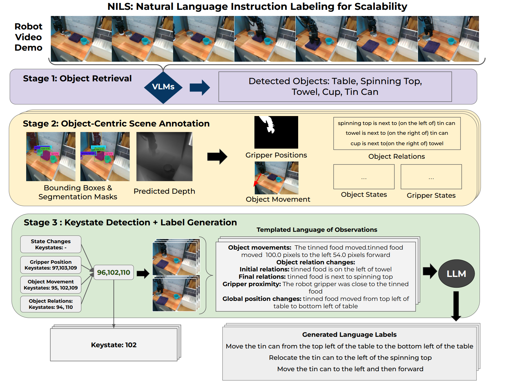

Abstract
A central challenge towards developing robots that can relate human language to their perception and actions is the scarcity of natural language annotations in diverse robot datasets. Moreover, robot policies that follow natural language instructions are typically trained on either templated language or expensive human-labeled instructions, hindering their scalability. To this end, we introduce a novel approach to automatically label uncurated, long-horizon robot teleoperation data at scale in a zero-shot manner without any human intervention. We utilize a combination of pre-trained vision-language foundation models to detect objects in a scene, detect object-centric changes, segment tasks from large datasets of unlabelled interaction data and then train language-conditioned policies on the relabeled datasets. Our experiments on dataset show that our method enables annotating diverse robot demonstrations and thus scaling training language-conditioned policies on unlabeled and unstructured datasets that match ones trained with oracle human annotations.
Architecture
 Overview of the proposed NILS framework for labeling long-horizon robot play sequences in a zero-shot manner using an ensemble of pretrained expert models. NILS consists of three stages:
- all relevant objects in the video are detected
- object-centric changes are detected and collected
- object change information is used to detect keystates and an LLM is prompted to generate a language label for the task